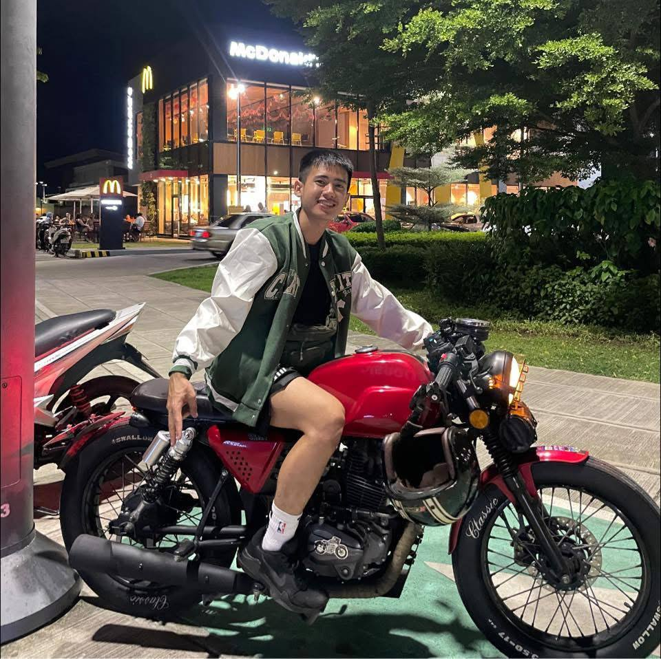
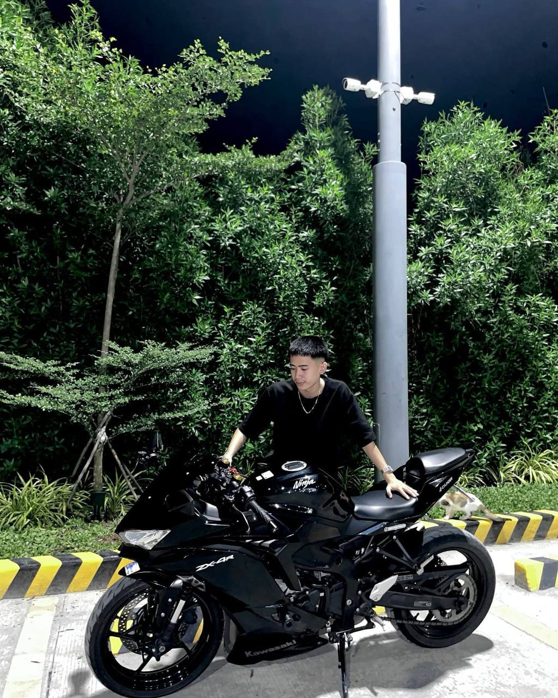
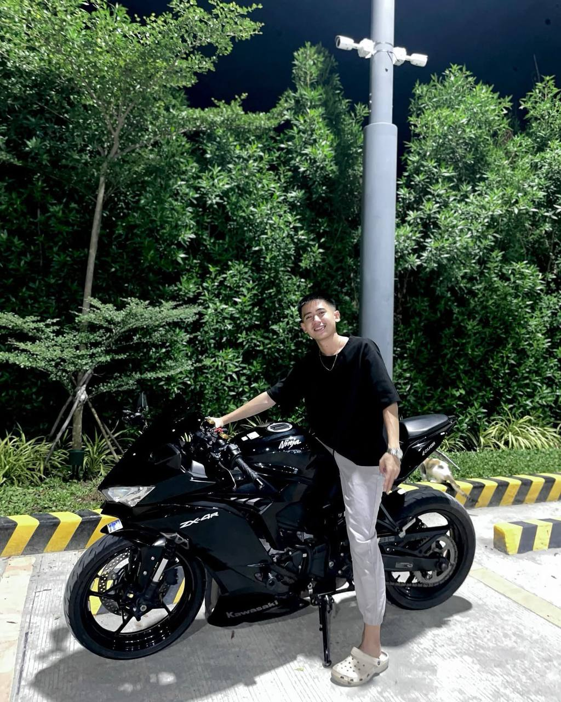
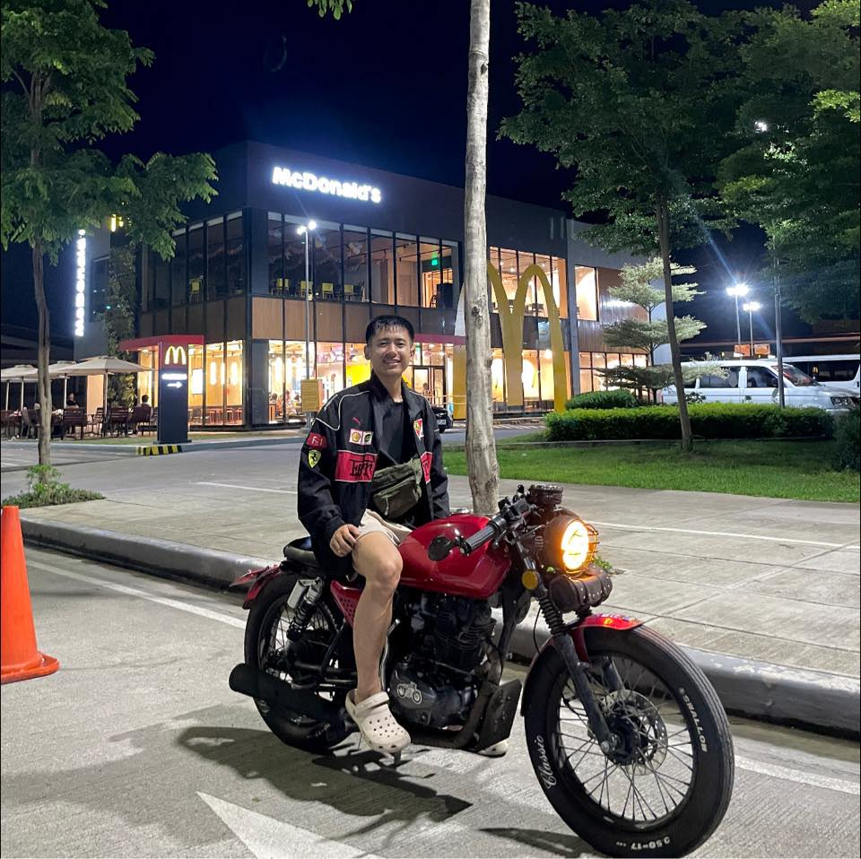
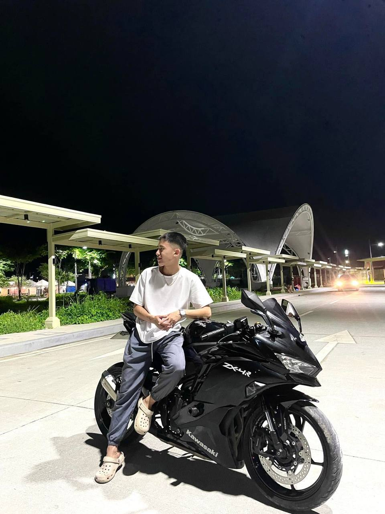
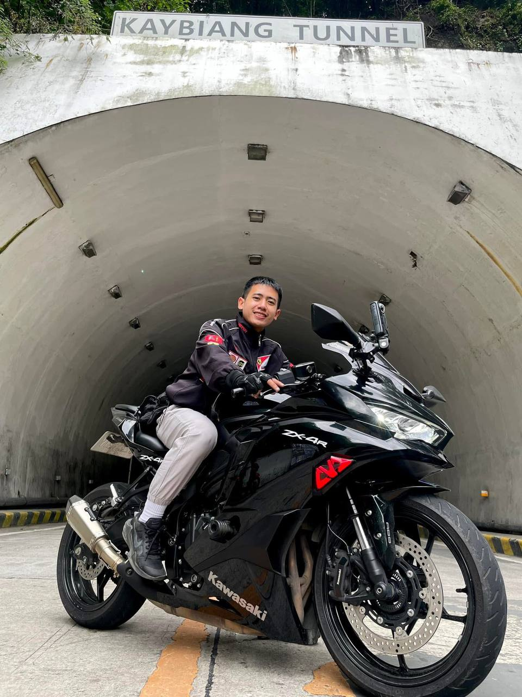

Aaron Jef Barcega

The Sporty Yet Classic Look. I’m excited to share this photo because,
even though it’s unusual to pair sporty attire with a classic bike, I think it works—and I love it!

I want to introduce myself by sharing my best photo. The 'look-away pose' symbolizes being unbothered by negativity.

The Proud Pose. I’m sharing this photo to show the happiness I feel in my life. Every hardship I’ve faced has been worth it.

The Ferrari Jacket. Sharing this photo after successfully building my dream classic bike.
Every time I look at this jacket, it reminds me that this bike is destined to become my Ferrari.

Another look-away pose, this time leaning on my bike.
It symbolizes that no matter how far I look ahead, I can always rely on my bike. It’s not just a machine—it’s my partner, ready to take me anywhere.

A photo with my bike and my favorite adventure spot. I’m sharing this because these two have brought me to where I am today.
Thanks to them, my name is now a bit more recognized by strangers than ever before. They are the core of my happiness and the foundation of my success.
About Me:
My name is Aaron Jef N. Barcega, an IT student focused on building my own empire.
Balancing work and studies has been a constant journey for me, as I strive to turn my dreams into reality.
One of my greatest passions is motorcycles, and each one I own has a special story.
My black Honda Wave is my reliable companion for delivering parcels; it’s incredibly efficient and helps me with my job.
Then there’s my red motorcycle—a classic bike that I gifted myself as a reward for my hard work and to fulfill a long-time dream.
Finally, there’s my Kawasaki Ninja, my ultimate dream bike.
Achieving it was a milestone, but it’s only the beginning—I won’t stop until I achieve my next goal: owning my dream car.